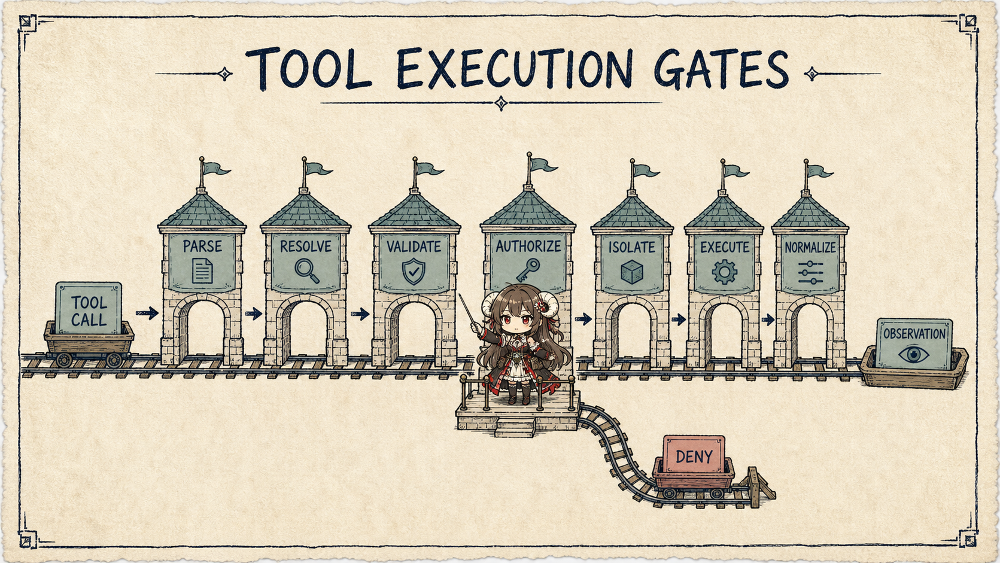
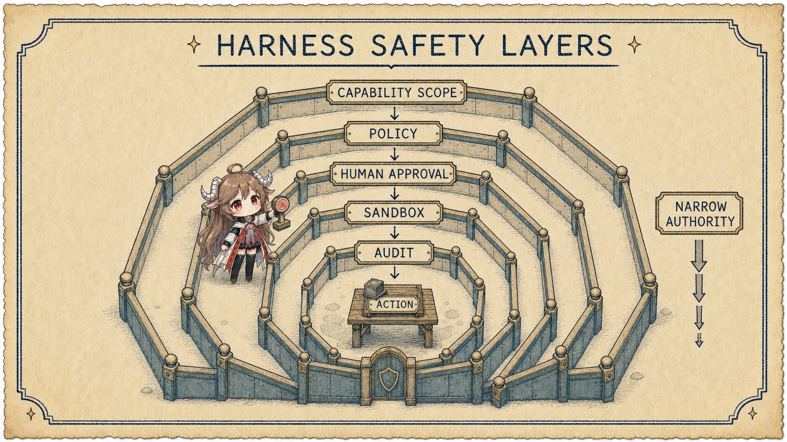

A minimal agent demo can fit in a few lines: send messages to a model, execute a returned tool call, send the result back. A real runtime immediately faces dozens of other questions. What if arguments are invalid? May reads and writes run concurrently? Where does a command execute? Who approves network access? Where does a huge result go? How does an interrupted process recover? How does a user see progress? How is one effect audited? Those are not capabilities in model weights.
Reading contract
- This part answers: which responsibilities belong to the runtime harness and how a tool proposal crosses safety and state boundaries.
- It does not do: put all agent engineering inside “harness,” or blur loop control flow with the runtime that carries it.
- Exit check: you should be able to trace a tool call from proposal to evidence and assign every failure to an owner.
Terminology boundary
OpenAI’s Harness engineering describes the Codex harness as the core agent loop and its tool and instruction environment. Anthropic sometimes emphasizes instructions plus guardrails and elsewhere separates session, harness, and sandbox. This series uses a narrower review boundary: the harness is the execution environment and control plane outside the model and inside one run; the agent loop is the control flow that repeatedly advances it.
1. The harness first owns boundaries
Models are good at proposing plans under uncertainty. The runtime must contain uncertainty inside deterministic boundaries. Which tools are visible to the current role, whether arguments satisfy a schema, which paths are writable, which network destinations exist, and how results are serialized belong to policy and code—not to an improvised model decision.
| Control surface | Facts it owns | Why the model cannot own them |
|---|---|---|
| Request assembler | Model, instructions, tools, context view, budgets | Requests must be reproducible and observable |
| Tool registry | Name, schema, capability, version, result type | The model cannot invent real interfaces |
| Policy / permission | Allow, deny, ask, and scope | Safety boundaries need determinism |
| Sandbox / executor | Files, processes, network, and resource limits | Prompt text cannot isolate effects |
| State / transcript | Run state, events, result references, checkpoints | Recovery and audit need durable facts |
| Observer / evaluator | Progress, metrics, and outcome evidence | Self-report cannot be the only truth |
2. A tool call crosses seven gates
A tool call is structured model output: a proposal. A robust harness does not map it directly to a function. It separates interpretation, authority, execution, and observation.

- Parse: confirm the call is complete and belongs to the current request.
- Resolve: find the exact tool version in the current visible registry.
- Validate: check types, ranges, exclusions, and required fields.
- Authorize: combine actor, resource, action, and environment into allow / deny / ask.
- Isolate: create filesystem, process, network, and credential boundaries.
- Execute: manage timeout, cancellation, concurrency, retries, and idempotency keys.
- Normalize: turn stdout, structured results, errors, and artifacts into a stable observation.
{
"call_id": "call_42",
"tool": "run_tests@3",
"arguments": { "target": "./payment", "mode": "read-write" },
"policy": { "decision": "allow", "rule": "repo-test" },
"sandbox": { "fs": "workspace", "network": "off", "timeout_s": 120 },
"result": { "status": "failed", "exit_code": 1, "artifact_ref": "log://9f2" }
}3. Tool design shapes the action space
More tools are not automatically better. Two overlapping write tools, a universal shell, and vague free-text arguments expand the action space. The model must guess the tool, guess arguments, and infer success from unstructured output. High-leverage harness work compresses a complex world into a small set of orthogonal, composable tools.
3.1 A good tool serves the model and the runtime
| Dimension | Model interface | Runtime interface |
|---|---|---|
| Semantics | When to call and when not to | Capability id and version |
| Input | Few, clear fields | Strict schema and normalization |
| Output | Enough to choose the next step | Typed result, artifact, and error class |
| Effect | What will change | Permission, idempotency, compensation, audit |
| Cost | When the call is worth making | Timeout, rate, token, and resource budgets |
Do not pour large output back into context. Store full logs as artifacts and return a summary, critical errors, and a reference that can be paged later. This improves both context budget and recovery.
4. Permission and sandbox are different gates
Permission answers whether this actor may perform this action. The sandbox answers what the allowed action can actually reach. Permission to run tests does not imply access to the home directory. Permission to read a repository does not imply permission to transmit it to arbitrary network destinations. Both layers are required.

- Capability scope: do not expose irrelevant tools to the model.
- Policy decision: match actor, action, resource, and environment.
- Human approval: pause only at high-risk or ambiguous boundaries and show an understandable diff.
- Sandbox: limit blast radius with filesystem, network, process, and credential isolation.
- Audit: record who proposed the effect, which rule allowed it, and what actually occurred.
5. Session, state, and transcript are not chat history
Anthropic’s Managed agents treats a session as a stateful environment around the model, harness, and sandbox. Engineering still needs to distinguish UI conversation, model-visible messages, append-only events, external artifacts, checkpoints, and environment snapshots. They have different lifetimes and recovery roles.
Restarting by sending old chat back to a model is unsafe. The runtime must know which tool calls actually executed, which were in flight, how the workspace changed, whether approvals remain valid, and which external objects already exist. Deterministic records recover effects; the model should not infer them from prose.
6. Observability crosses model and tool boundaries
A final response and total token count are not enough to debug a harness. A run trace needs request assembly, model events, tool proposal, policy decision, sandbox execution, observation, checkpoint, and exit reason. Sensitive bodies can be redacted; control events cannot disappear.
- Stable run, turn, and call ids join every event.
- Record tool latency, queue time, retry, cancellation, and artifact size.
- Separate model error, tool error, policy denial, environment failure, and user cancellation.
- Retain the exit reason and unfinished work so the outer loop can decide safely.
7. Harness review checklist
| Review question | If unanswered | Risk |
|---|---|---|
| Which capabilities can the model see now? | No versioned registry | Capability drift and wrong selection |
| Where are tool calls validated deterministically? | The model self-checks | Invalid arguments reach effects |
| Who owns authorization and isolation? | Only prompt warnings exist | Unbounded blast radius |
| How are large results and secrets handled? | Everything returns to context | Disclosure and window pollution |
| Which facts recover an interrupted process? | Only chat is replayed | Duplicate effects and false state |
| Does every exit have a machine-readable reason? | Only final prose exists | The outer loop cannot take over safely |
The harness turns “the model can think of it” into “the system can do it safely.” Next we enter the control flow that keeps advancing inside it: how an agent loop makes one run converge correctly.